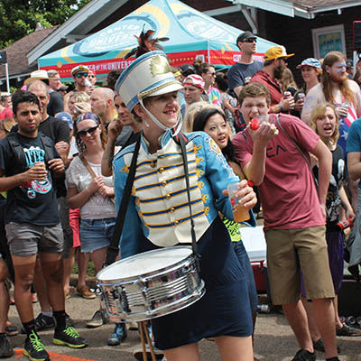

Ten years of Tough love
A guide to Tulsa’s world-class annual cycling event

Photos by Propel Marketing
Ten years ago, no one expected Saint Francis Tulsa Tough to become the extraordinary, nationally known event that it is today. It started as a bike race and ride, but it’s become something more and better—a sweaty, screaming, hilarious celebration of the bicycle. Participants and spectators speak of it in reverential tones reserved for religious ceremonies and Coneys.
Visit TulsaTough.com for more info and event registration.
June 12 to 14, more than 2,000 racers, another 2,000 riders, an untold number of spectators and all that beautiful tax revenue will be rolling into Tulsa, just because of bicycles.
Director Malcolm McCollam didn’t know Tulsa Tough would become this, but serendipity was on his side. Tulsa had a history of successful cycling events, plus the advantage of people with experience, knowledge and connections.
“We felt confident that we could put on a good event,” McCollam said.
But they didn’t know whether sponsors would get behind it.
“And let’s face it,” McCollam said, “in this business, there’s a lot to the saying, ‘It’s all about the money.’ You don’t run one of these things without significant financial backing.
“And the other thing we didn’t know [laughing nervously] was if anybody would come.”
Those initial fears have been put to rest like my pet goldfish I won at the fair when I was seven (I don’t think Nemo even made it home). Fans regularly post the countdown—“Six months until Tulsa Tough!” In the dead of winter, people talk about it as their carrot to get through the long, cold nights.
Board member Chris Zenthoefer played a key role in the event’s conception, McCollam said. A new cyclist, Zenthoefer was on Tulsa’s Sports Commission Executive Board, which sought to create an annual event instead of relying on short-lived sporting events passing through town.
“He went down to Wichita Falls, Texas, and saw what they had going on at Hotter’N Hell [annual cycling event],” McCollam said. Back in Tulsa, “nothing really big was going on. We had a lot of grassroots events. Those were great. But there was kind of a vacuum.”
To fill the void, Saint Francis Tulsa Tough was born like some mythological creature from Zeus’ cycling-enhanced thigh. Thirty-one races take place over three days. Six Gran Fondos (a long-distance, mass ride on a marked route) happen over two days, with incentives for those completing the 100+ mile rides under a certain time. (Gran Fondo might be Italian for Big Masochist—our Google Translate is broken so we can’t verify, but it sounds right).
There’s even a free 8- or 5.4-mile townie ride for the entire family, from the aspiring young cyclist to your buddy who hasn’t seen his feet since the Reagan administration.
Last year, the Voice's Greg Bollinger spent a day with local Tulsa Tough racer Braxton Mundell, who ended up winning the Men's Cat 4:
For more on Tulsa cycling, check out Mitch Gilliam's look back at the birth of Cry Baby Hill, Molly Bullock's bike-to-work experiment and Ray Pearcey's update on our progress toward a supportive cycling culture.

SCHEDULE OF EVENTS
Thursday, June 11
There are no races or Fondos today. But you wish there were. It’s like Christmas Eve when you’re a kid: “WHY CAN’T IT BE NOW?!”
If you go for a ride at River Parks, you might bump into some professional race teams. Ask to join their ride if you can keep up—it’s like riding with Santa’s reindeer before they drop off presents to all the boys and girls.
Friday, June 12
Races: The McNellie’s Group Blue Dome Criterium starts at 6:15 p.m. with Men’s Cat III, followed by Men’s Cat I/II, Women’s Pro I/II and Men’s Pro I.
Route: This figure 8 course allows you to see the high-speed racing up close—so close you get pushed by the wind the racers are creating. Somehow, the races get faster as it gets darker. There are always a few wrecks, but it’s shocking there’s not mass carnage.
Where to watch: The apex of the figure 8 (formerly the Dilly Deli corner). Those who know meander toward the start/finish line—there’s always a bunch sprint, and it’s as good a time as any to start losing your voice.
Race review by 2014 Men’s Cat I/II overall winner Bryan DuVall: Friday night is more an all-out speed course. The turns are wide, full-gas speed through the corners—for the general public who don’t know about bike racing, this is the closest to NASCAR. Not a lot of technicality to it because the course is so big—it’s all about speed. Personally, it’s one of my favorite styles of courses—a big rolling mass of chaos. Which also lends to the danger of it. It almost always comes down to a quick, short, snappy field sprint.
Saturday, June 13
Races: GKFF Brady Arts District Criterium. Starting at 10 a.m. and running well after 9 p.m., everyone from Cat V to Pros races today’s course.
Route: L-shaped course through the heart of the Brady Arts District, including several narrow, sharp turns plus “Soundpony Hill,” a subtle increase in elevation that takes its toll on riders over repeat climbs.
Where to watch: My favorite spot is near Soundpony, where several interesting phenomena take place:
• Last year, race officials had to tell people (read: Lucas Euser, current professional racer) to quit trying to hand racers dollar bills as they passed, as it was creating a dangerous situation.
• This is also where the Women’s and Men’s Pros get beer “hand ups” from the crowd after their race.
• Also, several dozen attractive women (AKA spoke sirens) descend on the Men’s Pros after their race like Seal Team Six operatives—no one knows where they came from, they were just suddenly there.
Race Review with Bryan DuVall: Saturday is similar to Friday but with a couple more features, and of course, Soundpony Hill has the ability to break things up a little bit. There are some cross wind sections and a series of narrow corners. It all helps to break it up just a touch, because the group is so big they can’t possibly all go through the bottleneck corners. That changes the pace of that event. The big move usually comes from the hill—a strong rider can generally hold it to the finish line from the hill. It doesn’t necessarily boil down to the last field sprint, although that can still be a factor. Last year, when I won the field sprint, I launched at the corner on top of Soundpony Hill and held it all the way to the finish line from there. It’s kind of a long, drawn-out sprint.
Saturday Gran Fondo
Route: Southwest of town to climb Kiefer Hill, then back to Keystone Dam and through Sand Springs to climb McKinley Hill.
FYI: Tulsa Tough’s Gran Fondos stack up against any major Gran Fondo in the country. “Our entry fees for the Fondo, and what the Fondo riders get for their base-level entry fee, is one-half to a third of other entry fees,” McCollam said. “It’s unbelievable the value this Fondo gives the riders.”
Cycling celebrity appearances: Bob Roll (cycling commentator, former pro racer, comedian), Jeremy Powers (U.S. Cyclocross National Champion, DJ, comedian), and maybe a surprise or two.
Distances: 40.3 miles, 69.9 miles, 110 miles.
Awards: Riding 110 miles under time (5 hours for men and 5:40 for women), King and Queen of the Mountain (Men’s and women’s fastest climb of McKinley Hill).
Other Saturday Events: Guthrie Green Festival, The Children’s Hospital at Saint Francis Bear Clinic: (from noon to 2 p.m., each child will receive a free plush panda to “triage” with the volunteer medical team), kids’ race (age 9 and under).
Sunday, June 14
Races: River Parks Criterium, AKA Cry Baby Hill, runs from 8 a.m. to about 6 p.m. In between, anything can happen.
Route: The ovular course starts and finishes at 15th Street and Riverside Drive. The climb begins at Lawton Avenue and turns onto 13th Street amidst a mass of screaming spectators. The course circles around to Riverside Drive via Galveston Avenue.
How it works: In a symbiotic miracle, the encroaching crowd (“MIND THE GAP!”) prevents attacking but also inspires the racers. Referees and The Commandments rule the madness, and the race always takes priority. Cry Baby Hill is totally unique to Tulsa and has become famous throughout the U.S. Other event organizers constantly harangue McCollam—”How do you do that? I want that at my race/event!”
“It can’t be done,” McCollam replies. “Cry Baby Hill is as organic as it gets. They can create something cool, but it’s got to be natural, authentic and reflect what already exists in their community.”
Parental advisory: Leave your kids, dog, stroller and glass at home and go check it out.
Golden opportunity: I am personally aware of at least a dozen relationships that have started on Cry Baby Hill and the following #takemondayoff. I also know of a few that have ended because of Cry Baby Hill.
Race Review with Bryan DuVall: Sunday is far and away the hardest of the hardman style criterium courses. It’s not the fact Cry Baby Hill is all that hard, it’s the fact you go over it 30 or 40 times. Cry Baby Hill has a mystique all its own. There’s the crowd, and the weather always plays some sort of factor. As much as you have to suffer on that course, you can’t help but smile because of all the noise and chaos. That last corner [before the start/finish line] is off-camber and more than 90 degrees. There’s always a potential for a wipeout. I just damage-control that corner each time. I try to stick to the inside to stay out of trouble—in case someone falls on the inside of you, they take you out. But if you are on the inside of them and they fall, they slide away from you. That course is a constant fight for position all race long—that is almost more challenging than the physical aspect of it.
Sunday Gran Fondo
Route: North through Skiatook, Barnsdall and Avant.
Climb of interest (read: oxygen deficit): Javine Hill (outside Avant) immediately follows the 5-mile time trial. A 1-mile climb levels off and immediately ramps back up for a 2.5-mile climb. 5 percent average, 8 percent maximum-—this might be a good place for medical supervision. And a priest.
Distances: 39.1 miles, 66.3 miles, 107.9 miles.
Awards: Riding 110 miles under time (5 hours for men and 5:40 for women), completing both days’ longest distances each day before 5 p.m., fastest completion of a 5-mile time trial at 103rd Street North and 52nd West Avenue (west of Sperry).
Other Sunday Events: Kid’s Zone presented by Pediatric and Adolescent Care and Dr. Jennifer Donnelly (1 p.m.-5 p.m. on Riverside Drive—“Cry Baby Hill for kids”), STRIDER Adventure Zone with test rides of STRIDER bikes (age 18 months- 5 years), Kids’ race (age 9 and under), ever-popular Lobeck Taylor Family Foundation Townie Ride (2:15 p.m.)
For more from Andy, check out his visitors' guide to downtown Tulsa, his experience piece about life as a Rent-a-Santa or his story about Chimera's Sunday Vinyl Brunch.
.jpg)
.jpg)